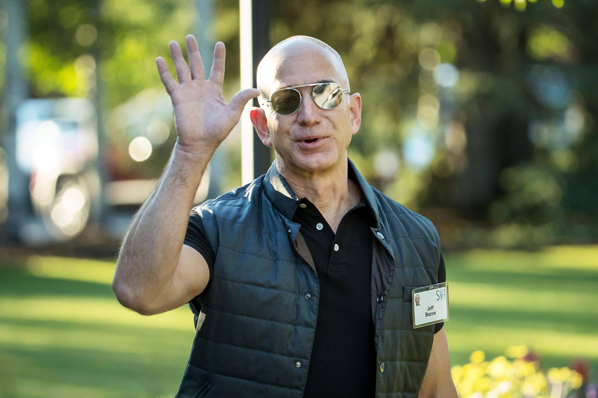
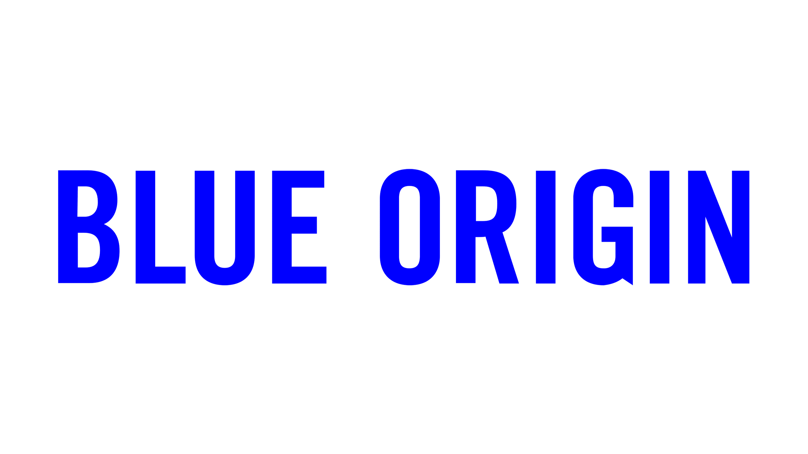
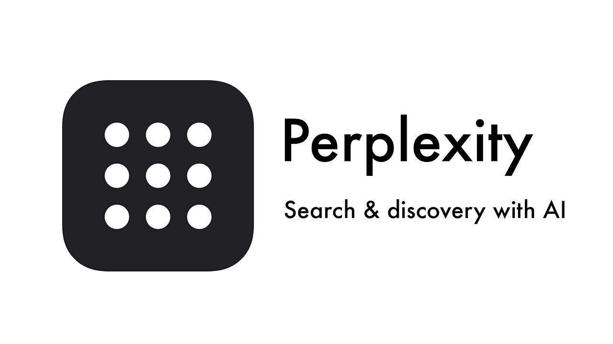

Hi!, i'm Jezz Bezos
CEO of Amazon.com
I am an entrepreneur known for founding Amazon in 1994,
which started as an online bookstore and grew into one
of the largest e-commerce and cloud computing companies
in the world. I also founded Blue Origin in 2000, a
space exploration company aiming to make space travel
more accessible.

About
Early Life & Career
Jeff Bezos, born on January 12, 1964, in
Albuquerque, New Mexico, displayed early signs of
his future entrepreneurial spirit through his
curiosity and intellect. Raised in a supportive
environment, he excelled academically and pursued
his passion for science and technology. After
graduating from Princeton University with degrees in
electrical engineering and computer science, Bezos
ventured into the finance industry on Wall Street
before making a pivotal decision in 1994.
He founded Amazon.com, initially as an online bookstore, with the ambitious vision of creating a global marketplace offering an unparalleled selection of products and services. Despite facing skepticism, Bezos's relentless drive, customer-centric approach, and willingness to innovate propelled Amazon to become the world's largest online retailer, reshaping the way people shop and consume goods and inspiring countless entrepreneurs worldwide.
He founded Amazon.com, initially as an online bookstore, with the ambitious vision of creating a global marketplace offering an unparalleled selection of products and services. Despite facing skepticism, Bezos's relentless drive, customer-centric approach, and willingness to innovate propelled Amazon to become the world's largest online retailer, reshaping the way people shop and consume goods and inspiring countless entrepreneurs worldwide.
Hobby
In 2013, Bezos, his brother, his brother-in-law, and
his parents spent 30 days at sea recovering pieces
of the engine of the Apollo 11 spacecraft, which
took the first humans to the moon.
Amazon
Amazon's success under Jeff Bezos can be attributed
to its relentless focus on customer satisfaction,
innovation, and long-term thinking. Bezos's
commitment to putting the customer first has driven
the company to continuously innovate and experiment
with new ideas, leading to groundbreaking products
and services like AWS and Kindle. By prioritizing
data-driven decision-making and operational
excellence, Amazon has been able to diversify its
business and expand into new markets while
maintaining its position as a leader in e-commerce.
Bezos's visionary leadership and willingness to take
risks have enabled Amazon to disrupt multiple
industries and sustain its growth trajectory over
the years.
Now

Portfolio
Amazon.com

Amazon is a pioneering
multinational technology company, revolutionizing
e-commerce, cloud computing, digital streaming, and
artificial intelligence, driven by a relentless
commitment to customer satisfaction and innovation.
More
Blue Origin

Blue Origin is a pioneering
aerospace company founded by Jeff Bezos, dedicated
to advancing space exploration through the
development of reusable rocket technology and
enabling access to space for future generations.
More
Perplexity

Perplexity is a statistical measure
used in natural language processing to gauge the
uncertainty or unpredictability of a language
model's predictions based on the given context, with
lower values indicating greater predictability and
higher values indicating greater uncertainty.
More